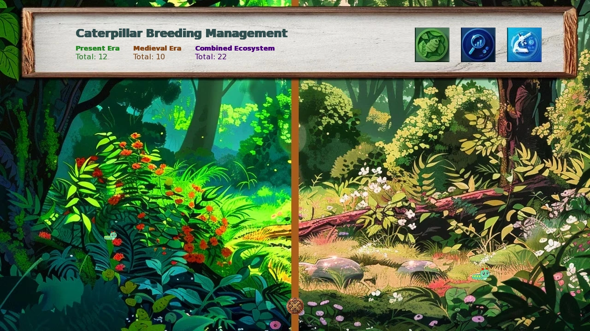
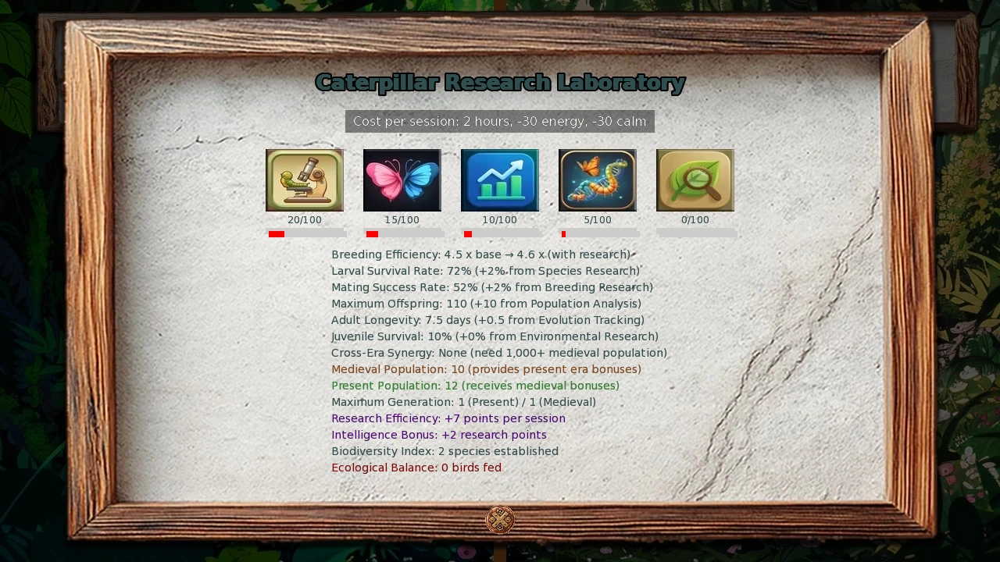
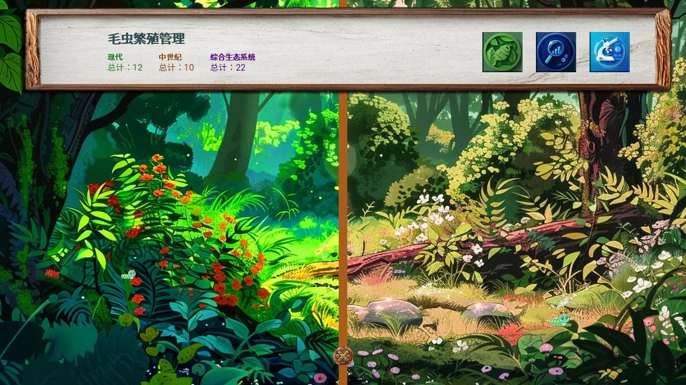

Select a screenshot to enlarge it. Screens show example inventories and progress.
Collect, release, research and let days pass
Caterpillar Rearing is a long-term ecosystem spanning the Present and Medieval eras. You collect wild specimens, release them into their native era and improve breeding through research. Living populations unlock fabrics, unlimited fishing bait, equipment and one-time Crystal rewards.
- Click the wiggling caterpillar at an eligible location to collect it.
- Visit Present → Uptown → Whispering Woods (Uptown), or Medieval → Village Outskirts → Whispering Woods.
- Choose Manage Caterpillar Breeding, then use the paw-shaped Add All control.
- Research useful paths and continue ordinary play. Growth advances with in-game days, not real-world waiting.
Management is free and instant, with no relationship gate. Collection alone does not breed anything: specimens must be released. The first eligible Present-woods visit also introduces the system through Seraph’s tutorial.
Wild discovery and mountain actions
Each discovery location has its own species pool, visible hours and cooldown. Its selected species stays the same until collected. Clicking adds one specimen and starts that location’s 2–10 day cooldown. Leaving and returning does not give a fresh species roll. The generic sprite does not reveal the species or rarity before collection.
Mountain discovery uses a different pool: each species found anywhere in the current era’s location pools is equally likely, regardless of its usual wild weight. It does not require previously visiting every contributing location. Research-only species are not added merely by hiking.
| Action | Location | Base cost | Stat reward |
|---|---|---|---|
| Hike Mountains | Present Uptown Mountain Foothills | 100 min,75 Energy | +1 Stamina |
| Climb Mountain | Medieval Mountain Foothills | 130 min,85 Energy | +1 Stamina |
Energy is spent; Stamina increases. After CID’s mineral introduction, the Present hike has a 1-in-200 chance to find one Chronium instead of its caterpillar. The Medieval climb does not use that replacement. These actions do not share the clickable locations’ respawn cooldown.
The Bug Collector tutorial quest, for ten distinct discoveries, grants five Comet Moths. Claim the quest reward, then release them if you want them in the ecosystem.
Using the habitat and population screens
The management screen shows Present, Medieval and combined living totals. Its three upper-right icons are Add All, population information and research. Add All releases every specimen currently held, routing each species to its native era. It does not mean the era you are currently visiting. There is no individual release, partial quantity or era-split control in this screen.
Collection and ecosystem are different inventories. Releasing removes the held quantity; living caterpillars and adults contribute to population goals. Click ecosystem sprites or the information rows to inspect a species. The detailed display records living species, Birds Fed and Wallflowers; these last two count failed survival and mating attempts.
For established large populations, the caterpillar/adult breakdown is an estimate. The combined total remains the useful number for rewards. Use the bottom X to leave; leaving management does not remove released populations.

Small populations have a real lifecycle
Released caterpillars mature after their species’ growth days. Base maturation survival is 70%. Adults get one breeding opportunity four days after maturation. All first-generation adults are eligible; later generations use half the adult count, rounded down. Eligible breeders then face 50% base mating success.
A successful breeder produces 50–100 babies before research. Those babies face 10% base survival, so “five to ten babies” is only an approximate outcome after successful mating, not a guarantee from each released specimen. Adults are removed once their age exceeds the effective lifespan, initially seven days. They do not breed daily.
For example, a growth-eight caterpillar released on Day 10 can mature on Day 18, breed on Day 22 and have its adult group disappear on Day 26. Survival and mating remain uncertain. Add several founders and improve research to reduce the chance that a species dies out. New specimens can join an existing cohort instead of starting their own independent countdown.
Five research paths, each capped at 100
Open the research icon from management. Each session costs 120 minutes,30 Energy and 30 Calm, with both resources required. Modified Intelligence improves the gain; Researching doubles it, up to 20 points per session. Intelligence 40 with Researching already reaches that cap. At that rate, a fresh path needs five sessions, ten hours and 150 of each resource.
| Path | At 100 | Affects large-population growth? |
|---|---|---|
| Species Research | Maturation 70%→80% | No |
| Breeding Research | Mating 50%→60% | Yes |
| Population Analysis | Babies 50–100→50–200 | Yes |
| Evolution Tracking | Adult lifespan 7→17 days; research species | No |
| Environmental Research | Baby survival 10%→30% | Yes |
For an established ecosystem, Environmental, Population and Breeding directly improve daily growth. Species and Evolution help small cohorts, and Evolution also unlocks special founders. Research costs Energy and Calm, not Stamina.
Research-point calculation
Gain is 5 + floor(modified Intelligence÷8), doubled with Researching, capped at 20 and then limited by the points remaining to 100. Increasing a batch’s maximum from 100 to 200 changes its average from 75 to 125; it does not double the average.

Research rewards enter collection first
Evolution milestones grant five specimens each; maxing all five paths grants five of the final species. Passing a milestone still counts; an exact score is unnecessary. Use Add All afterward to release the reward.
| Evolution progress | Species |
|---|---|
| 25 | Madagascar Sunset Moth |
| 50 | Comet Moth |
| 75 | Vampire Moth |
| 100 | White Witch Moth |
| All five 100 | Chronos Moth |
Comet Moth also has the ten-species tutorial reward. The other four special research species are not in the wild discovery pools. Neither the research multiplier nor a higher population increases the five-specimen reward.
Medieval populations help the Present
The Medieval living total boosts Present maturation, adult lifespan and mating after research improvements. It does not boost Medieval breeding itself. Survival and mating cannot exceed 100%; adult lifespan rounds down. At the top tier, a successful Present breeder has a 10% chance of a second baby batch on that same breeding day.
Medieval synergy thresholds
| Medieval living total | Maturation | Lifespan | Mating | Second-batch chance |
|---|---|---|---|---|
| 0–999 | 1.00× | 1.00× | 1.00× | — |
| 1,000–9,999 | 1.10× | 1.10× | 1.10× | — |
| 10,000–49,999 | 1.10× | 1.20× | 1.10× | — |
| 50,000–99,999 | 1.20× | 1.50× | 1.30× | — |
| 100,000+ | 1.33× | 2.00× | 1.60× | 10% |
Growth changes at 1,000 per species
At 1,000 living members of one species in one era, that population becomes an established total. It no longer follows individual growth and adult-age cycles. Its displayed caterpillar/adult ratio is approximate. Adding more founders then adds directly to the total.
Daily increase before rounding is about 0.1875% with no research,1.125% with Breeding/Population/Environmental all 100, or 1.8% for that fully researched Present population with 100,000+Medieval support. Species growth days, maturation survival, adult lifespan and the second-batch chance do not accelerate this established daily growth.
The daily population cap is 99,000,000 per species per era, not for the whole ecosystem. Many species can therefore reach the 100 million and 1 billioncombined goals. A sudden slowdown after 1,000 does not mean the ecosystem stopped working.
Established-growth reference
Daily total is the old total multiplied by 1 + 0.5×mating rate×average babies×baby survival÷ 1,000, rounded down and capped at 99 million. Only the Present’s Medieval mating multiplier enters this formula.
Population milestones and late progression
Milestones count the combined living ecosystem, not held collection specimens. Visit the indicated place to play each one-time reward scene; several ready scenes may require repeated visits.
| Combined total | Visit | Reward |
|---|---|---|
| 500,000 | Either woods | 1 Crystal; +5 Seraph and +5 Lillian |
| 1,000,000 | Marina, Fishing Hut, Acknowledged+ | Caterpillar Bait |
| 5,000,000 | Either woods | 3 Crystals; +5 each relationship |
| 10,000,000 | Medieval woods | Silken Moth Cloth |
| 15,000,000 | Medieval woods | Silk Uniform |
| 100,000,000 | Either woods | 5 Crystals; +5 each relationship |
The three Crystal scenes total nine Crystals. The 10 M and 15 M equipment rewards are separate from ordinary silk fabrics. The later 1 billionfollow-up is at the Present woods after main story 74, Terra’s The First Unmeasured Plot, Zodiac’s The Necessary Evil, and the 100 M/10 M/15 Mreward scenes. Population alone cannot replace those prerequisites. Its story outcome is left for the game.
Collecting fabric without spending the ecosystem
Collect Moth Silk is available in either woods. Its base cost is 70 minutes,20 Energy and 20 Calm. A living population is required; the gathered fabric tier depends on its combined total. Collecting silk does not spend that population.
| Living total | Common fabrics | Rare fabrics | Epic fabrics |
|---|---|---|---|
| 1–99 | 1–2 | — | — |
| 100–999 | 1–3 | — | — |
| 1,000–9,999 | 2–4 | 70%:1–2 | — |
| 10,000–99,999 | 4–7 | 1–3 | 30%:1 |
| 100,000–999,999 | 6–10 | 2–5 | 60%:1–2 |
| 1,000,000–9,999,999 | 12–18 | 4–8 | 1–3 |
| 10,000,000+ | 20–30 | 8–12 | 3–5 |
A separate modified-Perception check can add one bonus fabric, Rare normally or Epic if a subsequent Luck check succeeds. These are extra to the population table. Unlimited fishing bait is a different unlock: visit Marina at 1 M rather than expecting silk collection to enable it.
Species and wild-location reference
There are 70 species:30 moths,30 butterflies,five special research species and five aquatic species. Growth days mean larval maturation, not adult lifespan. Native era controls Add All routing.
All 70 species
| Species | Rarity | Native era | Size | Growth days |
|---|---|---|---|---|
| Silkworm | common | Present | medium | 5 |
| Cecropia Moth | rare | Present | large | 8 |
| Luna Moth | rare | Present | large | 7 |
| Polyphemus Moth | rare | Present | large | 7 |
| Atlas Moth | epic | Present | large | 9 |
| Imperial Moth | rare | Present | large | 8 |
| Io Moth | common | Present | medium | 6 |
| Vine Hawkmoth | common | Present | large | 6 |
| Tobacco Hornworm | common | Present | large | 6 |
| Tomato Hornworm | common | Present | large | 6 |
| White-marked Tussock | common | Present | medium | 5 |
| Woolly Bear | common | Present | medium | 5 |
| Gypsy Moth | common | Present | medium | 7 |
| Promethea Moth | rare | Present | large | 7 |
| Buck Moth | rare | Present | medium | 6 |
| Elephant Hawkmoth | rare | Medieval | large | 7 |
| Privet Hawkmoth | rare | Medieval | large | 8 |
| Death's-head Hawkmoth | epic | Medieval | large | 9 |
| Puss Moth | rare | Medieval | large | 8 |
| Lime Hawkmoth | common | Medieval | large | 7 |
| Eyed Hawkmoth | common | Medieval | large | 7 |
| Poplar Hawkmoth | common | Medieval | large | 6 |
| Cinnabar Moth | common | Medieval | medium | 5 |
| Garden Tiger Moth | common | Medieval | medium | 6 |
| White Ermine Moth | common | Medieval | medium | 5 |
| Emperor Moth | rare | Medieval | medium | 7 |
| Burnished Brass Moth | common | Medieval | small | 5 |
| Hummingbird Clearwing | rare | Present | medium | 6 |
| Rosy Maple Moth | rare | Present | medium | 6 |
| Giant Leopard Moth | common | Present | medium | 7 |
| Black Swallowtail | common | Present | large | 6 |
| Eastern Tiger Swallowtail | common | Present | large | 7 |
| Giant Swallowtail | common | Present | large | 8 |
| Spicebush Swallowtail | common | Present | large | 6 |
| Pipevine Swallowtail | rare | Present | medium | 7 |
| Zebra Swallowtail | rare | Present | medium | 6 |
| Red Admiral | common | Present | medium | 5 |
| Painted Lady | common | Present | medium | 5 |
| American Lady | common | Present | medium | 5 |
| Mourning Cloak | rare | Present | large | 6 |
| Question Mark | common | Present | medium | 5 |
| Comma | common | Medieval | medium | 6 |
| Great Spangled Fritillary | rare | Present | medium | 8 |
| Gulf Fritillary | common | Present | medium | 6 |
| Zebra Longwing | rare | Present | medium | 7 |
| Cloudless Sulphur | common | Present | large | 6 |
| Orange Sulphur | common | Present | medium | 5 |
| Clouded Yellow | common | Medieval | medium | 5 |
| Brimstone | common | Medieval | medium | 6 |
| Orange-tip | common | Medieval | small | 5 |
| Large White | common | Medieval | medium | 5 |
| Cabbage White | common | Present | small | 4 |
| Green-veined White | common | Medieval | small | 5 |
| Peacock | common | Medieval | medium | 6 |
| Small Tortoiseshell | common | Medieval | medium | 5 |
| Monarch | common | Present | medium | 6 |
| Palos Verdes Blue | legendary | Present | small | 9 |
| Karner Blue | legendary | Present | small | 9 |
| Mitchell's Satyr | legendary | Present | small | 10 |
| Schaus' Swallowtail | legendary | Present | large | 10 |
| Madagascar Sunset Moth | legendary | Present | large | 12 |
| Comet Moth | legendary | Medieval | large | 15 |
| Vampire Moth | legendary | Present | medium | 11 |
| White Witch Moth | legendary | Medieval | large | 14 |
| Chronos Moth | legendary | Present | medium | 10 |
| Bog Copper | common | Present | small | 5 |
| Baltimore Checkerspot | common | Present | medium | 6 |
| Brown China-mark | rare | Present | small | 8 |
| Swamp Metalmark | epic | Present | small | 10 |
| Water Veneer | legendary | Present | small | 12 |
All 39 clickable discovery locations and weighted pools
Windows below reflect actual visibility by the current hour. Many begin at 01:00 and therefore exclude the midnight hour. Normal access to the location still applies. Percentages are each new specimen’s pool weights, not the chance that a cooldown will end sooner.
| Location | Spawn window | Cooldown(days) | Species chances |
|---|---|---|---|
| Present → Residential Block | 01:00–24:00 | 3 | Cabbage White 40%; Vine Hawkmoth 25%; Red Admiral 20%; American Lady 10%; Gypsy Moth 5% |
| Present → Shopping Mall | 09:00–20:00 | 4 | Cabbage White 25%; Red Admiral 25%; Eastern Tiger Swallowtail 20%; Black Swallowtail 15%; Atlas Moth 15% |
| Present → Back Alley | 01:00–24:00 | 4 | American Lady 25%; Painted Lady 25%; Mourning Cloak 20%; Great Spangled Fritillary 15%; Death's-head Hawkmoth 15% |
| Present → Local Café | 01:00–24:00 | 2 | Painted Lady 35%; Red Admiral 25%; Cabbage White 20%; Orange Sulphur 15%; Io Moth 5% |
| Present → Uptown Park | 01:00–24:00 | 3 | Red Admiral 25%; Painted Lady 20%; Monarch 20%; Gulf Fritillary 15%; Great Spangled Fritillary 10%; Mourning Cloak 5%; Zebra Longwing 5% |
| Present → City Beach (Uptown) | 01:00–24:00 | 4 | Gulf Fritillary 40%; Cloudless Sulphur 30%; Orange Sulphur 20%; Zebra Longwing 7%; Zebra Swallowtail 3% |
| Present → Whispering Woods (Uptown) | 01:00–24:00 | 6 | Cecropia Moth 25%; Luna Moth 20%; Polyphemus Moth 20%; Imperial Moth 15%; Promethea Moth 10%; Atlas Moth 5%; Rosy Maple Moth 5% |
| Present → Town Hall (Uptown) | 07:00–17:00 | 6 | Cecropia Moth 25%; Luna Moth 20%; Polyphemus Moth 20%; Io Moth 15%; Tobacco Hornworm 10%; Atlas Moth 5%; Rosy Maple Moth 5% |
| Present → Mountain Foothills (Uptown) | 01:00–24:00 | 4 | Luna Moth 30%; Mourning Cloak 25%; Buck Moth 20%; Woolly Bear 15%; Giant Leopard Moth 7%; Gypsy Moth 3% |
| Present → University Campus | 07:00–24:00 | 6 | Painted Lady 35%; Red Admiral 30%; Cabbage White 20%; Orange Sulphur 10%; Io Moth 5% |
| Present → Apartment Complex | 01:00–24:00 | 3 | American Lady 40%; Cabbage White 25%; Painted Lady 20%; White-marked Tussock 10%; Gypsy Moth 5% |
| Present → Downtown Park | 01:00–24:00 | 5 | Great Spangled Fritillary 35%; Red Admiral 25%; Gulf Fritillary 20%; Painted Lady 15%; Monarch 5% |
| Present → Spa (Tranquil Spa) | 01:00–24:00 | 4 | Black Swallowtail 40%; Eastern Tiger Swallowtail 35%; Cabbage White 15%; Hummingbird Clearwing 7%; Giant Swallowtail 3% |
| Present → City Street (Downtown) | 01:00–24:00 | 4 | Eastern Tiger Swallowtail 35%; Black Swallowtail 30%; Cabbage White 20%; American Lady 10%; Gypsy Moth 5% |
| Present → Hidden Waterfall | 01:00–24:00 | 2 | Bog Copper 35%; Baltimore Checkerspot 30%; Brown China-mark 18%; Swamp Metalmark 12%; Water Veneer 5% |
| Medieval → Ancient Earth Shrine | 01:00–24:00 | 5 | Death's-head Hawkmoth 30%; Elephant Hawkmoth 20%; Privet Hawkmoth 20%; Emperor Moth 15%; Puss Moth 10%; Atlas Moth 5% |
| Medieval → Fishing Hut | 01:00–24:00 | 3 | Garden Tiger Moth 40%; White Ermine Moth 30%; Large White 20%; Cabbage White 7%; Burnished Brass Moth 3% |
| Medieval → Mystic's Meditation Grove | 01:00–24:00 | 5 | Emperor Moth 30%; Puss Moth 20%; Luna Moth 15%; Polyphemus Moth 15%; Death's-head Hawkmoth 15%; Atlas Moth 5% |
| Medieval → Royal Hunting Grounds (Edge) | 07:00–20:00 | 4 | Privet Hawkmoth 35%; Elephant Hawkmoth 25%; Cecropia Moth 15%; Polyphemus Moth 10%; Death's-head Hawkmoth 10%; Imperial Moth 5% |
| Medieval → Knight's Training Grounds | 06:00–19:00 | 3 | White Ermine Moth 40%; Garden Tiger Moth 30%; Comma 15%; Large White 10%; Cinnabar Moth 5% |
| Medieval → Peasant Huts | 01:00–24:00 | 3 | Large White 45%; Cabbage White 35%; Green-veined White 15%; Orange-tip 5% |
| Medieval → Monastery Scriptoria | 01:00–24:00 | 4 | Peacock 40%; Small Tortoiseshell 30%; Comma 15%; Green-veined White 10%; Burnished Brass Moth 5% |
| Medieval → Caravan Rest Stop | 01:00–24:00 | 3 | Comma 40%; Clouded Yellow 30%; Brimstone 20%; Orange-tip 7%; Garden Tiger Moth 3% |
| Medieval → Village Healer's Hut | 01:00–24:00 | 3 | Orange-tip 40%; Brimstone 30%; Clouded Yellow 20%; Green-veined White 7%; Cinnabar Moth 3% |
| Medieval → Bandit Hideout | 01:00–24:00 | 7 | Death's-head Hawkmoth 50%; Puss Moth 25%; Elephant Hawkmoth 15%; Emperor Moth 5%; Atlas Moth 5% |
| Medieval → Grand Bazaar | 01:00–24:00 | 3 | Clouded Yellow 35%; Brimstone 30%; Comma 20%; Peacock 10%; Burnished Brass Moth 5% |
| Medieval → Hot Springs (Royal Hot Springs) | 01:00–24:00 | 3 | Brimstone 40%; Clouded Yellow 30%; Orange-tip 20%; Small Tortoiseshell 7%; Eyed Hawkmoth 3% |
| Medieval → Secluded Sanctuary | 01:00–24:00 | 5 | Puss Moth 30%; Emperor Moth 25%; Luna Moth 20%; Polyphemus Moth 15%; White Ermine Moth 7%; Atlas Moth 3% |
| Medieval → Rural Farm | 01:00–24:00 | 2 | Cabbage White 45%; Large White 35%; Green-veined White 15%; Orange-tip 3%; Cinnabar Moth 2% |
| Medieval → Archery Range | 01:00–24:00 | 3 | Small Tortoiseshell 40%; Peacock 30%; Comma 20%; White Ermine Moth 7%; Eyed Hawkmoth 3% |
| Medieval → Castle Garden | 01:00–24:00 | 3 | Green-veined White 35%; Peacock 30%; Small Tortoiseshell 20%; Orange-tip 10%; Emperor Moth 5% |
| Medieval → Whispering Woods | 01:00–24:00 | 5 | Polyphemus Moth 30%; Luna Moth 25%; Cecropia Moth 20%; Puss Moth 15%; Emperor Moth 7%; Atlas Moth 3% |
| Medieval → Witch's Hut | 01:00–24:00 | 10 | Death's-head Hawkmoth 20%; Atlas Moth 15%; Luna Moth 15%; Emperor Moth 12%; Puss Moth 10%; Cecropia Moth 10%; Polyphemus Moth 8%; Elephant Hawkmoth 5%; Privet Hawkmoth 3%; Imperial Moth 2% |
| Medieval → Forest Clearing | 01:00–24:00 | 2 | Large White 25%; Cabbage White 20%; Garden Tiger Moth 15%; White Ermine Moth 15%; Comma 10%; Peacock 5%; Small Tortoiseshell 5%; Orange-tip 3%; Brimstone 2% |
| Present → Butterfly Pavilion | 01:00–24:00 | 4 | Silkworm 25%; Spicebush Swallowtail 20%; Pipevine Swallowtail 15%; Karner Blue 12%; Schaus' Swallowtail 10%; Palos Verdes Blue 8%; Mitchell's Satyr 6%; Tomato Hornworm 4% |
| Present → Boardwalk | 01:00–24:00 | 5 | Question Mark 35%; Schaus' Swallowtail 25%; Palos Verdes Blue 20%; Mitchell's Satyr 20% |
| Present → Patron Statue | 01:00–24:00 | 4 | Question Mark 30%; Spicebush Swallowtail 25%; Silkworm 20%; Tomato Hornworm 15%; Pipevine Swallowtail 10% |
| Present → Mansion Exterior (Downtown) | 18:00–23:00 | 4 | Karner Blue 35%; Tomato Hornworm 35%; Silkworm 30% |
| House → Garden | 01:00–24:00 | 3 | Lime Hawkmoth 50%; Poplar Hawkmoth 50% |
For a missing rare species, compare its best wild weight against the era-wide hiking pool. The five special research species are listed in the research section; their names do not imply that every location can spawn them.
Saved progress and troubleshooting
Collection, released populations, research, cooldowns and awarded milestones are saved. Closing management does not reset them. Population information also has a Restore Backup control when an automatic snapshot is available; an unavailable snapshot shows TBA and a disabled button. Restoring loads that snapshot rather than adding a second population. Keep normal saves for your broader game progress.
- No growth: release the collection, then advance game days.
- A rare founder vanished: small cohorts can fail maturation or mating; collect more and research survival.
- No specimen at a location: check the full spawn window and cooldown; normal location access is also needed.
- Research disabled: have 30 Energy and 30 Calm, and choose a path below 100.
- Reward did not appear: visit its woods after the living total reaches the threshold.
- Bait still finite: complete Marina’s specific Caterpillar Bait action.
收集、放归、研究，等待游戏日推进
毛虫繁育是跨现代与中世纪的长期生态。先收集野外个体，放归其原生时代，再研究繁育条件。活体种群可解锁布料、无限鱼饵、装备和一次性水晶奖励。
- 在符合条件的地点点击扭动的毛虫，将其收进收藏。
- 前往现代 → 上城区 → 低语森林（上城区），或中世纪 → 村庄郊外 → 低语森林。
- 选择「管理毛虫繁育」，点击爪印形的全部放归控件。
- 研究有用方向，并继续日常游玩，种群按游戏日成长，现实等待无效。
管理免费、不耗时、不要求关系。收藏里的个体不会自行繁殖，须先放归；第一次符合条件的现代森林到访还会触发 Seraph 的教学。
野外发现与登山行动
各发现地点有自己的毛虫物种池、显示时段与冷却。选中的物种在采集前保持不变，点击后增加一只收藏，并开始该地点2–10天冷却。反复离开重进不能重抽，通用毛虫图形也不会提前显示物种或稀有度。
登山使用另一种抽法：当前时代所有地点池里出现过的物种，各自等概率，不受平常野外权重影响，也不要求先拜访每个地点。仅能研究获得的物种不会因此加入登山池。
| 行动 | 地点 | 基础消耗 | 属性奖励 |
|---|---|---|---|
| 山中徒步 | 现代上城区山脚 | 100分钟、75精力 | 耐力＋1 |
| 爬山 | 中世纪山脚 | 130分钟、85精力 | 耐力＋1 |
消耗的是精力，提高的是耐力。CID 介绍矿物后，现代徒步有1/200概率改为找到一块时源矿，替代这次毛虫；中世纪爬山没有这项替代。登山不共用点击采集的重生冷却。
教学任务虫类收藏家要求发现十种不同物种，奖励五只彗星蛾。领取后若想让它们繁育，还须放归。
使用栖息地与种群界面
管理界面显示现代、中世纪和合计活体，右上三个图标分别是全部放归、种群详情、研究。全部放归会转移当前持有的全部个体，每个物种自动进入原生时代，不是当前所在时代；这里没有单种放归、部分数量或分配时代的控件。
收藏与生态是两份不同库存。放归会扣除持有数量，生态里的幼虫与成虫则计入种群目标。点击生态图形或详情行可查看物种；「喂鸟数量」与「未能配对」一类统计，记录成长存活或交配失败的数量。
大型种群的幼虫与成虫比例只是估计，奖励更应看合计活体。底部X退出管理，已经放归的种群不会因关闭界面而消失。

小种群有成长与繁殖周期
放归的幼虫经过该物种的成长天数后变成成虫，基础成长存活率70%。成虫在羽化四天后只有一次繁殖机会：第一代全部有资格，之后各代仅取成虫数一半并向下取整，再进行基础50%的交配成功判定。
交配成功者在研究前产生50–100幼虫，幼虫再按基础10%存活率判定。因此「五到十只后代」只是交配成功后的大致结果，不是每只放归个体都保证有的回报。成虫年龄超过有效寿命后移除，初始寿命七天，不会每天繁殖。
例如成长八天的幼虫在第10天放归，可在第18天羽化、第22天繁殖，成虫组第26天消失，但存活与交配仍有随机性。可多放几只创始个体并先研究，降低整种消失的机会；新个体也可能加入已有批次，不一定另开独立倒计时。
五条研究方向，各最高100
从管理界面的研究图标进入，每次120分钟、30精力、30镇定（研究界面标为「平静」），两项资源都要足够。有效智力提高点数，研究技能使点数翻倍，每次最高20。智力40配研究技能就达到20点；按此速度，一条全新方向需五次、十小时，以及各150精力和镇定。
| 方向 | 到100时 | 影响大型种群日增长？ |
|---|---|---|
| 物种研究 | 成长存活70%→80% | 否 |
| 繁育研究 | 交配50%→60% | 是 |
| 种群分析 | 每批50–100→50–200 | 是 |
| 演化追踪 | 成虫寿命7→17天，奖励特殊物种 | 否 |
| 环境研究 | 后代存活10%→30% | 是 |
生态已稳定后，环境、种群、繁育三条直接提高日增长；物种与演化帮助小批次，演化还奖励特殊创始个体。研究消耗精力与镇定，不消耗耐力属性。
研究点数计算
先取5加有效智力除8向下取整，有研究技能则翻倍，每次最高20，再受距离100剩余点数限制。单批最高后代由100升至200，使平均从75变成125，并不是平均数量翻倍。
研究奖励先进入收藏
演化各里程碑奖励五只，全五条研究完成则奖励最后一类五只。超过门槛也有效，不必恰好停在指定点数；领奖后还要全部放归，才进入生态。
| 演化进度 | 物种 |
|---|---|
| 25 | 马达加斯加日落蛾 |
| 50 | 彗星蛾 |
| 75 | 吸血蛾 |
| 100 | 白女巫蛾 |
| 五条都100 | 克洛诺斯蛾 |
彗星蛾还可由十物种教学任务获得，另外四种特殊研究物种不在野外发现池。研究倍率或更大种群不会把五只奖励变多。
中世纪种群帮助现代
中世纪活体总量会在研究改善之后，加强现代的成长存活、成虫寿命与交配，不会反过来加强中世纪本身。存活和交配最高100%，成虫寿命向下取整。最高档还让成功的现代繁殖者在同一天有10%概率多产一批。
中世纪联动门槛
| 中世纪活体 | 成长存活倍率 | 寿命倍率 | 交配倍率 | 第二批概率 |
|---|---|---|---|---|
| 0–999 | 1.00× | 1.00× | 1.00× | — |
| 1,000–9,999 | 1.10× | 1.10× | 1.10× | — |
| 10,000–49,999 | 1.10× | 1.20× | 1.10× | — |
| 50,000–99,999 | 1.20× | 1.50× | 1.30× | — |
| 100,000+ | 1.33× | 2.00× | 1.60× | 10% |
单一物种到1,000后，成长方式改变
同一时代的同一物种达到1,000活体后，会改用稳定种群总量，不再逐批按成长天数和成虫年龄轮转。界面幼虫／成虫比例为估计，新放归个体则直接加入总量。
取整前的日增长，未研究约0.1875%；繁育、种群、环境都100时约1.125%；该满研究现代种群再有中世纪10万活体支持时为1.8%。物种成长天数、成长存活、成虫寿命与第二批概率，都不会额外加速这种日增长。
每日种群上限是每时代、每物种9,900万，不是整个生态。多种物种仍能合计达到1亿和10亿目标。到1,000后突然变慢，不代表系统停止。
稳定种群增长参考
每天以旧总量乘以「1＋0.5×交配率×平均每批数量×后代存活率÷1,000」，向下取整，最高9,900万。中世纪联动在这里仅使用现代交配倍率。
种群里程碑与后期进度
门槛看两时代合计活体，不看收藏中的持有个体。到表列地点触发一次性奖励剧情，多段同时就绪时可能需要反复到访。
| 合计活体 | 到访 | 奖励 |
|---|---|---|
| 50万 | 任一低语森林 | 1水晶，Seraph 与 Lillian 各＋5 |
| 100万 | Marina 在钓鱼小屋，已遇见以上 | 毛虫鱼饵 |
| 500万 | 任一低语森林 | 3水晶，两位关系各＋5 |
| 1,000万 | 中世纪低语森林 | 丝蛾布 |
| 1,500万 | 中世纪低语森林 | 丝绸制服 |
| 1亿 | 任一低语森林 | 5水晶，两位关系各＋5 |
三次水晶剧情共九水晶，1,000万与1,500万装备奖励另于普通蛾丝布料。10亿后续在现代森林，还需主线74、Terra 的「第一块未测量样区」、Zodiac 的「必要之恶」，以及1亿、1,000万、1,500万奖励剧情完成。单靠种群不能代替前置，剧情结果留待游戏内体验。
采集布料，不消耗生态种群
两处森林都提供「采集蛾丝」，基础70分钟、20精力、20镇定。需要有活体，布料档位按合计总量，采集不会扣除种群。
| 活体总量 | 普通布料 | 稀有布料 | 史诗布料 |
|---|---|---|---|
| 1–99 | 1–2 | — | — |
| 100–999 | 1–3 | — | — |
| 1,000–9,999 | 2–4 | 70%:1–2 | — |
| 10,000–99,999 | 4–7 | 1–3 | 30%:1 |
| 100,000–999,999 | 6–10 | 2–5 | 60%:1–2 |
| 1,000,000–9,999,999 | 12–18 | 4–8 | 1–3 |
| 10,000,000+ | 20–30 | 8–12 | 3–5 |
还会单独按有效感知判定一次额外布料，通常为稀有；随后幸运也成功则改为史诗。这部分另加在种群表之外。无限鱼饵是另一项解锁，达到100万后应找 Marina，不是采丝便会自动开放。
物种与野外地点参考
共70物种：蛾类30、蝶类30、特殊研究五种、水生五种。成长天数指幼虫羽化前的时间，不是成虫寿命；原生时代决定全部放归时的去向。
全部70物种
| 物种 | 稀有度 | 原生时代 | 体型 | 成长天数 |
|---|---|---|---|---|
| 家蚕 | 普通 | 现代 | 中 | 5 |
| 塞克罗皮亚蚕蛾 | 稀有 | 现代 | 大 | 8 |
| 月神蛾 | 稀有 | 现代 | 大 | 7 |
| 独眼巨人蛾 | 稀有 | 现代 | 大 | 7 |
| 阿特拉斯蛾 | 史诗 | 现代 | 大 | 9 |
| 帝王蛾 | 稀有 | 现代 | 大 | 8 |
| 伊俄蛾 | 普通 | 现代 | 中 | 6 |
| 葡萄天蛾 | 普通 | 现代 | 大 | 6 |
| 烟草天蛾幼虫 | 普通 | 现代 | 大 | 6 |
| 番茄天蛾幼虫 | 普通 | 现代 | 大 | 6 |
| 白斑毒蛾 | 普通 | 现代 | 中 | 5 |
| 毛熊虫 | 普通 | 现代 | 中 | 5 |
| 舞毒蛾 | 普通 | 现代 | 中 | 7 |
| 普罗米修斯蛾 | 稀有 | 现代 | 大 | 7 |
| 巴克蛾 | 稀有 | 现代 | 中 | 6 |
| 象天蛾 | 稀有 | 中世纪 | 大 | 7 |
| 女贞天蛾 | 稀有 | 中世纪 | 大 | 8 |
| 鬼脸天蛾 | 史诗 | 中世纪 | 大 | 9 |
| 猫蛾 | 稀有 | 中世纪 | 大 | 8 |
| 椴树天蛾 | 普通 | 中世纪 | 大 | 7 |
| 眼纹天蛾 | 普通 | 中世纪 | 大 | 7 |
| 杨树天蛾 | 普通 | 中世纪 | 大 | 6 |
| 朱砂蛾 | 普通 | 中世纪 | 中 | 5 |
| 花园虎蛾 | 普通 | 中世纪 | 中 | 6 |
| 白貂蛾 | 普通 | 中世纪 | 中 | 5 |
| 帝王蛾 | 稀有 | 中世纪 | 中 | 7 |
| 亮铜蛾 | 普通 | 中世纪 | 小 | 5 |
| 蜂鸟透翅天蛾 | 稀有 | 现代 | 中 | 6 |
| 玫瑰枫蛾 | 稀有 | 现代 | 中 | 6 |
| 巨豹蛾 | 普通 | 现代 | 中 | 7 |
| 黑凤蝶 | 普通 | 现代 | 大 | 6 |
| 东部虎凤蝶 | 普通 | 现代 | 大 | 7 |
| 巨型凤蝶 | 普通 | 现代 | 大 | 8 |
| 黄樟凤蝶 | 普通 | 现代 | 大 | 6 |
| 管藤凤蝶 | 稀有 | 现代 | 中 | 7 |
| 斑马凤蝶 | 稀有 | 现代 | 中 | 6 |
| 红纹蝶 | 普通 | 现代 | 中 | 5 |
| 小红蛱蝶 | 普通 | 现代 | 中 | 5 |
| 美洲丽蝶 | 普通 | 现代 | 中 | 5 |
| 黄缘蝶 | 稀有 | 现代 | 大 | 6 |
| 问号蝶 | 普通 | 现代 | 中 | 5 |
| 逗号蝶 | 普通 | 中世纪 | 中 | 6 |
| 大银斑豹纹蝶 | 稀有 | 现代 | 中 | 8 |
| 湾岸豹纹蝶 | 普通 | 现代 | 中 | 6 |
| 斑马长翼蝶 | 稀有 | 现代 | 中 | 7 |
| 无云黄蝶 | 普通 | 现代 | 大 | 6 |
| 橙黄蝶 | 普通 | 现代 | 中 | 5 |
| 云黄蝶 | 普通 | 中世纪 | 中 | 5 |
| 钩粉蝶 | 普通 | 中世纪 | 中 | 6 |
| 橙尖粉蝶 | 普通 | 中世纪 | 小 | 5 |
| 大菜粉蝶 | 普通 | 中世纪 | 中 | 5 |
| 菜粉蝶 | 普通 | 现代 | 小 | 4 |
| 绿脉粉蝶 | 普通 | 中世纪 | 小 | 5 |
| 孔雀蝶 | 普通 | 中世纪 | 中 | 6 |
| 小龟纹蝶 | 普通 | 中世纪 | 中 | 5 |
| 帝王蝶 | 普通 | 现代 | 中 | 6 |
| 帕洛斯弗迪斯蓝蝶 | 传说 | 现代 | 小 | 9 |
| 卡纳蓝蝶 | 传说 | 现代 | 小 | 9 |
| 米切尔眼蝶 | 传说 | 现代 | 小 | 10 |
| 肖斯凤蝶 | 传说 | 现代 | 大 | 10 |
| 马达加斯加日落蛾 | 传说 | 现代 | 大 | 12 |
| 彗星蛾 | 传说 | 中世纪 | 大 | 15 |
| 吸血蛾 | 传说 | 现代 | 中 | 11 |
| 白女巫蛾 | 传说 | 中世纪 | 大 | 14 |
| 克洛诺斯蛾 | 传说 | 现代 | 中 | 10 |
| 沼泽铜蝶 | 普通 | 现代 | 小 | 5 |
| 巴尔的摩网眼蝶 | 普通 | 现代 | 中 | 6 |
| 褐水螟蛾 | 稀有 | 现代 | 小 | 8 |
| 沼泽金属斑蝶 | 史诗 | 现代 | 小 | 10 |
| 水草螟蛾 | 传说 | 现代 | 小 | 12 |
全部39处点击发现地点与权重
下表按当前小时的实际显示条件换算，许多地点从01:00开始，因此午夜那一小时不显示。原地点的进入限制仍适用；概率是下一个物种的抽取权重，不代表冷却有机会提前结束。
| 地点 | 显示时段 | 冷却(天) | 物种概率 |
|---|---|---|---|
| 现代 → 住宅街区 | 01:00–24:00 | 3 | 菜粉蝶 40%; 葡萄天蛾 25%; 红纹蝶 20%; 美洲丽蝶 10%; 舞毒蛾 5% |
| 现代 → 购物中心 | 09:00–20:00 | 4 | 菜粉蝶 25%; 红纹蝶 25%; 东部虎凤蝶 20%; 黑凤蝶 15%; 阿特拉斯蛾 15% |
| 现代 → 后巷 | 01:00–24:00 | 4 | 美洲丽蝶 25%; 小红蛱蝶 25%; 黄缘蝶 20%; 大银斑豹纹蝶 15%; 鬼脸天蛾 15% |
| 现代 → 本地咖啡馆 | 01:00–24:00 | 2 | 小红蛱蝶 35%; 红纹蝶 25%; 菜粉蝶 20%; 橙黄蝶 15%; 伊俄蛾 5% |
| 现代 → 上城公园 | 01:00–24:00 | 3 | 红纹蝶 25%; 小红蛱蝶 20%; 帝王蝶 20%; 湾岸豹纹蝶 15%; 大银斑豹纹蝶 10%; 黄缘蝶 5%; 斑马长翼蝶 5% |
| 现代 → 城市海滩（上城区） | 01:00–24:00 | 4 | 湾岸豹纹蝶 40%; 无云黄蝶 30%; 橙黄蝶 20%; 斑马长翼蝶 7%; 斑马凤蝶 3% |
| 现代 → 低语森林（上城区） | 01:00–24:00 | 6 | 塞克罗皮亚蚕蛾 25%; 月神蛾 20%; 独眼巨人蛾 20%; 帝王蛾 15%; 普罗米修斯蛾 10%; 阿特拉斯蛾 5%; 玫瑰枫蛾 5% |
| 现代 → 市政厅（上城区） | 07:00–17:00 | 6 | 塞克罗皮亚蚕蛾 25%; 月神蛾 20%; 独眼巨人蛾 20%; 伊俄蛾 15%; 烟草天蛾幼虫 10%; 阿特拉斯蛾 5%; 玫瑰枫蛾 5% |
| 现代 → 山脚（上城区） | 01:00–24:00 | 4 | 月神蛾 30%; 黄缘蝶 25%; 巴克蛾 20%; 毛熊虫 15%; 巨豹蛾 7%; 舞毒蛾 3% |
| 现代 → 大学校园 | 07:00–24:00 | 6 | 小红蛱蝶 35%; 红纹蝶 30%; 菜粉蝶 20%; 橙黄蝶 10%; 伊俄蛾 5% |
| 现代 → 公寓楼 | 01:00–24:00 | 3 | 美洲丽蝶 40%; 菜粉蝶 25%; 小红蛱蝶 20%; 白斑毒蛾 10%; 舞毒蛾 5% |
| 现代 → 市中心公园 | 01:00–24:00 | 5 | 大银斑豹纹蝶 35%; 红纹蝶 25%; 湾岸豹纹蝶 20%; 小红蛱蝶 15%; 帝王蝶 5% |
| 现代 → 水疗馆（静谧水疗馆） | 01:00–24:00 | 4 | 黑凤蝶 40%; 东部虎凤蝶 35%; 菜粉蝶 15%; 蜂鸟透翅天蛾 7%; 巨型凤蝶 3% |
| 现代 → 城市街道（市中心） | 01:00–24:00 | 4 | 东部虎凤蝶 35%; 黑凤蝶 30%; 菜粉蝶 20%; 美洲丽蝶 10%; 舞毒蛾 5% |
| 现代 → 隐藏瀑布 | 01:00–24:00 | 2 | 沼泽铜蝶 35%; 巴尔的摩网眼蝶 30%; 褐水螟蛾 18%; 沼泽金属斑蝶 12%; 水草螟蛾 5% |
| 中世纪 → 远古大地神殿 | 01:00–24:00 | 5 | 鬼脸天蛾 30%; 象天蛾 20%; 女贞天蛾 20%; 帝王蛾 15%; 猫蛾 10%; 阿特拉斯蛾 5% |
| 中世纪 → 钓鱼小屋 | 01:00–24:00 | 3 | 花园虎蛾 40%; 白貂蛾 30%; 大菜粉蝶 20%; 菜粉蝶 7%; 亮铜蛾 3% |
| 中世纪 → 修行者冥想林 | 01:00–24:00 | 5 | 帝王蛾 30%; 猫蛾 20%; 月神蛾 15%; 独眼巨人蛾 15%; 鬼脸天蛾 15%; 阿特拉斯蛾 5% |
| 中世纪 → 皇家狩猎场（边缘） | 07:00–20:00 | 4 | 女贞天蛾 35%; 象天蛾 25%; 塞克罗皮亚蚕蛾 15%; 独眼巨人蛾 10%; 鬼脸天蛾 10%; 帝王蛾 5% |
| 中世纪 → 骑士训练场 | 06:00–19:00 | 3 | 白貂蛾 40%; 花园虎蛾 30%; 逗号蝶 15%; 大菜粉蝶 10%; 朱砂蛾 5% |
| 中世纪 → 农民小屋 | 01:00–24:00 | 3 | 大菜粉蝶 45%; 菜粉蝶 35%; 绿脉粉蝶 15%; 橙尖粉蝶 5% |
| 中世纪 → 修道院抄写室 | 01:00–24:00 | 4 | 孔雀蝶 40%; 小龟纹蝶 30%; 逗号蝶 15%; 绿脉粉蝶 10%; 亮铜蛾 5% |
| 中世纪 → 商队休息站 | 01:00–24:00 | 3 | 逗号蝶 40%; 云黄蝶 30%; 钩粉蝶 20%; 橙尖粉蝶 7%; 花园虎蛾 3% |
| 中世纪 → 村庄治疗师小屋 | 01:00–24:00 | 3 | 橙尖粉蝶 40%; 钩粉蝶 30%; 云黄蝶 20%; 绿脉粉蝶 7%; 朱砂蛾 3% |
| 中世纪 → 强盗藏身处 | 01:00–24:00 | 7 | 鬼脸天蛾 50%; 猫蛾 25%; 象天蛾 15%; 帝王蛾 5%; 阿特拉斯蛾 5% |
| 中世纪 → 大集市 | 01:00–24:00 | 3 | 云黄蝶 35%; 钩粉蝶 30%; 逗号蝶 20%; 孔雀蝶 10%; 亮铜蛾 5% |
| 中世纪 → 温泉（皇家温泉） | 01:00–24:00 | 3 | 钩粉蝶 40%; 云黄蝶 30%; 橙尖粉蝶 20%; 小龟纹蝶 7%; 眼纹天蛾 3% |
| 中世纪 → 隐秘圣所 | 01:00–24:00 | 5 | 猫蛾 30%; 帝王蛾 25%; 月神蛾 20%; 独眼巨人蛾 15%; 白貂蛾 7%; 阿特拉斯蛾 3% |
| 中世纪 → 乡村农场 | 01:00–24:00 | 2 | 菜粉蝶 45%; 大菜粉蝶 35%; 绿脉粉蝶 15%; 橙尖粉蝶 3%; 朱砂蛾 2% |
| 中世纪 → 射箭场 | 01:00–24:00 | 3 | 小龟纹蝶 40%; 孔雀蝶 30%; 逗号蝶 20%; 白貂蛾 7%; 眼纹天蛾 3% |
| 中世纪 → 城堡花园 | 01:00–24:00 | 3 | 绿脉粉蝶 35%; 孔雀蝶 30%; 小龟纹蝶 20%; 橙尖粉蝶 10%; 帝王蛾 5% |
| 中世纪 → 低语森林 | 01:00–24:00 | 5 | 独眼巨人蛾 30%; 月神蛾 25%; 塞克罗皮亚蚕蛾 20%; 猫蛾 15%; 帝王蛾 7%; 阿特拉斯蛾 3% |
| 中世纪 → 女巫小屋 | 01:00–24:00 | 10 | 鬼脸天蛾 20%; 阿特拉斯蛾 15%; 月神蛾 15%; 帝王蛾 12%; 猫蛾 10%; 塞克罗皮亚蚕蛾 10%; 独眼巨人蛾 8%; 象天蛾 5%; 女贞天蛾 3%; 帝王蛾 2% |
| 中世纪 → 林中空地 | 01:00–24:00 | 2 | 大菜粉蝶 25%; 菜粉蝶 20%; 花园虎蛾 15%; 白貂蛾 15%; 逗号蝶 10%; 孔雀蝶 5%; 小龟纹蝶 5%; 橙尖粉蝶 3%; 钩粉蝶 2% |
| 现代 → 蝴蝶馆 | 01:00–24:00 | 4 | 家蚕 25%; 黄樟凤蝶 20%; 管藤凤蝶 15%; 卡纳蓝蝶 12%; 肖斯凤蝶 10%; 帕洛斯弗迪斯蓝蝶 8%; 米切尔眼蝶 6%; 番茄天蛾幼虫 4% |
| 现代 → 木板路 | 01:00–24:00 | 5 | 问号蝶 35%; 肖斯凤蝶 25%; 帕洛斯弗迪斯蓝蝶 20%; 米切尔眼蝶 20% |
| 现代 → 赞助者雕像 | 01:00–24:00 | 4 | 问号蝶 30%; 黄樟凤蝶 25%; 家蚕 20%; 番茄天蛾幼虫 15%; 管藤凤蝶 10% |
| 现代 → 豪宅外部（市中心） | 18:00–23:00 | 4 | 卡纳蓝蝶 35%; 番茄天蛾幼虫 35%; 家蚕 30% |
| 住处 → 花园 | 01:00–24:00 | 3 | 椴树天蛾 50%; 杨树天蛾 50% |
缺少稀有物种时，可比较最佳野外权重与该时代登山池。五种特殊研究物种须按研究段落获取，不代表所有地点都会生成它们。
进度保留与常见问题
收藏、放归种群、研究、重生冷却与已领里程碑都会存档，关闭管理不会清空。种群详情在自动快照可用时还提供「恢复备份」；不可用时显示TBA，按钮为灰色。恢复是载入快照，不是额外加一份种群；整体游玩仍应正常存档。
- 没有成长：先把收藏放归，再推进游戏日。
- 稀有创始个体消失：小种群可能成长或交配失败，可多收集并研究存活。
- 地点没有毛虫：检查显示时段、冷却以及地点本身是否可进入。
- 不能研究：须有30精力和30镇定，并选择未到100的方向。
- 没有奖励：活体达到门槛后，到指定森林触发。
- 鱼饵仍有限：需完成 Marina 专门的毛虫鱼饵行动。
Adapted and updated from the community Chronoromancer Wiki. Community source and history · CC BY-SA 4.0. Game images © Chronoromancer Studio.